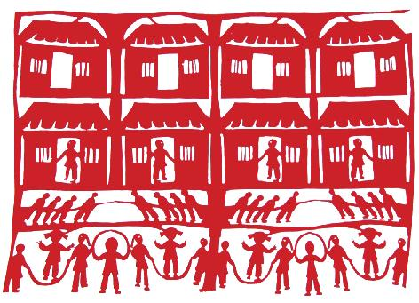
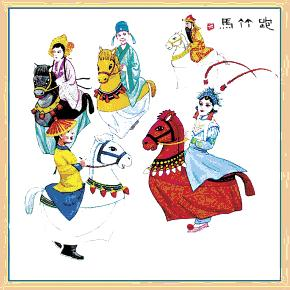

综况
“楚韵汉风、南秀北雄”是徐州最为鲜明的地域文化。 徐州历史上为华夏九州之一，自古便是北国锁钥、南国门户、兵家必争之地和商贾云集中心。有超过6000年的文明史和2600年的建城史，被称为“帝王之乡”，有“九朝帝王徐州籍”之说。徐州是两汉文化的发源地，有“彭祖故国、刘邦故里、项羽故都”之称，因其拥有大量文化遗产、名胜古迹和深厚的历史底蕴，也被称作“东方雅典”。
历史文化
徐州是彭祖文化的发源地，也是徐文化的集大成者。徐州古称彭城，建城史可以追溯到4000多年前帝尧时建立的大彭氏国，以彭城之名的见诸文字是春秋时即公元前573年，是江苏境内最早出现的城邑。夏禹治水时，把全国疆域分为九州，徐州即为九州之一。当时“徐州”只是作为一个自然经济区域的名称，彭城邑成为这一区域的中心城市。帝尧时彭祖建大彭氏国，彭城因而得名，是世界彭氏宗亲公认的发源地。作为中华饮食文化及养生文化的鼻祖栖息地，徐州市留下了大量宝贵的彭祖饮食文化、养生文化等遗产，相传大彭氏国的创始人彭祖活了800岁，是中国烹饪和气功的创始人。彭祖曾被孔子推崇备至，也被道家奉为奠基人之一。彭祖养生文化的精髓是“药食同源，以食养生”。此外，还有按摩养生养颜术。彭祖的饮食养生之道，对以后汉文化的形成和发展起着重要的作用。
“佳处未易识,当有来者知”，“两汉看徐州，秦唐看西安，明清看北京”，徐州的两汉文化遗存，如狮子山楚王陵、龟山汉墓、戏马台、泗水亭、霸王楼、歌风台、拔剑泉、子房祠、王陵母墓、羊鬼山展亭、汉兵马俑等。徐州是汉高祖刘邦的故乡，建立了大汉王朝，汉王朝与西方的古罗马帝国遥相响应，成为当时世界上最强大的帝国。我们的汉族、汉字、汉语，都与这个王朝有着关联。
戏曲艺术
◆徐州琴书
徐州琴书原名丝弦，清代用扬琴伴奏，故又称扬琴。后改名称徐州琴书。徐州琴书是在明、清小曲的基础上，逐步演变而成的乐曲系、联曲体的曲艺种类。演唱时韵味独特，艺人坐中间打板击琴，伴奏者列左右，以扬琴、坠子、手板为主，配有三弦、软弓胡琴、古筝、瓷碟等。徐州琴书与苏州评弹、扬州评话并称为"江苏三书"。
民间工艺
国家级非物质文化遗产名录，我市江苏柳琴、徐州梆子、徐州琴书、徐州剪纸、徐州香包、徐州鼓吹乐、邳州跑竹马、邳州纸塑狮子头、丰县糖人贡9个项目成功入选。
◆徐州剪纸
徐州剪纸，作为一种民间美术形式，广泛分布于邳州、新沂、沛县、丰县、云龙区、鼓楼区、泉山区、贾汪区等地，尤其集中分布于邳州市大部分乡镇、新沂市河沟镇及沛县敬安镇。
◆邳州跑竹
邳州跑竹马又称“竹马舞”、“竹马会”。邳州跑竹马流行于滩上、八路、徐塘等镇，属自娱自乐型民间舞蹈。相传始于宋代，内容取材于鞑子（金兀术）跨马游春的故事，已有一千年的历史。经历代民间艺人的排演与实践，已形成了固定的演出形式，具有鲜明的艺术特色。
◆丰县吹糖人
丰县吹糖人以糖稀（饴糖）为主要原料。制作方法将糖稀块温火熔解，以口吹手捏为主，辅以模印。可吹制成各种人物、动物、植物果实、生活用品及少年儿童喜爱的各种玩具模型等。
◆铜山面塑
铜山面塑远近闻名，铜山县黄集镇的范楼村是有名的"面塑村"，全村200多户村民，几乎家家户户都会捏面人。目前，业余面塑艺人遍布全镇每个角落，专业面塑艺人100多名。
◆徐州香包
香包，又称“香囊”，“香缨”，俗称“香布袋”、“料布袋”。制作和佩戴香包的习俗在我国由来已久。徐州香包从造型上看，以新、奇、美、真为特色，形状敦实淳朴，色彩对比强烈，立体造型栩栩如生，有较高的观赏、收藏价值。它形状非常多，有：心形、圆形、菱形、元宝形、蝴蝶形、花瓶形（保平安）、水滴形、长方形、人物娃娃等。
◆邳州木刻版画
邳州木刻版画源于邳州民间雕刻画，兴盛于唐代，明、清时期发展迅速，历史悠久，源远流长，世代相传。在美术、民俗史上占有重要的地位。
◆邳州纸塑狮子头
邳州纸塑狮子头历史悠久，世代相传，据有关史料记载，已有500多年历史。邳州纸塑狮子头是邳州民间狮子舞的狮子头面具，从狮子头面具的发展能看到民间狮子舞的发展及中国民间面具艺术的发展轨迹。
风俗传统
◆古来民俗尚武
徐州体育项目众多，古来民俗尚武。4000年前称“大彭国”时，即有了彭祖气功。春秋时期，游泳活动颇盛。汉画像石中有举重、摔跤、狩猎、六博、武术等生动刻绘。这些活动项目历代相传，经久不衰。徐州市于1958年获“全国学校体育红旗市”称号。沛县、铜山县被评为全国体育先进县，徐州市两次被评为全国“田径之乡”，向国家、省队等培养输送的运动员达650人，宫鲁鸣、邢爱兰等参加了第二十四届奥运会比赛。古代足球活动于清代中叶基本停止，但徐州沛县尚有此活动。徐州也获得“足球城”的称号。沛县素有“武术之乡”之称，且武术流派多，拳路广，武术活动具有传统性。邳州老城西北方，有一个祁家村。因为这个村里的人世代喜爱下象棋，被称为“棋村”。
◆正月十五赏灯
正月十五赏灯，徐州城中点灯、放炮竹、点“滴溜金儿”。往东至古邳、邳县一带，鞭炮和灯少了，多出了“抛扫帚”火把的游戏。再往东至新沂一带，活动方式与邳县略同，但玩火把的时间，却是在二月初二日。
◆娶亲习俗
娶亲之日，徐州一带女方必须在中午12时前到达男家，但丰县西北数乡、新沂东南部数乡，女方到达男家的时间则必须在日落之后。
◆求雨习俗
遇旱求雨，徐州西部到龙王庙烧香、抬龙王像游街求祈，认为“龙王一张嘴，遍地都是水”。往东至邳县，求龙王以外，又加上了求渊德公的内容。再往东至新沂，求龙王仅是第一步，随着旱情的加重，依次再求渊德公，求关圣帝君和地藏王菩萨。
◆二月二龙抬头
二月初二龙抬头日，徐州城中祭福神（土地老爷），爆米花、炒糖豆表示惊蜇打雷。用柴木灰圈仓，仓中放铜元，以祈富贵，并用敲床桄、照烛光的方式诅咒毒虫。邳县一带，用草木灰圈仓，仓中埋五谷杂粮，祈五谷丰登，炒米花、糖豆表示炒死害虫。再往东至新沂一带，草木灰圈的仓中放炒熟了的杂粮，引鸟雀来啄食，名为“吃虫”，以为可以使农作物免遭虫害。
◆生活习俗
服饰男子均穿长袍马褂，女子上穿大襟袄、大襟衫，腰系长裙，下穿长裤。颜色老年人多尚黑色，中青年爱穿蓝色，少儿服装多尚红绿鲜艳的服装。鞋徐州人穿鞋盛行“双道脸”帽子男子多毡帽、瓜皮帽、礼帽、草帽、女子多项蓝布手巾或表丝巾，儿童有“福巾”、“老头帽”。居住传统上讲究住”四合房“，一般城市居民，多是数家同住一大杂院。
◆“腊八粥”
据民俗学家的介绍，农历十二月吃“腊八粥”和中秋吃月饼、端午吃粽子、重阳吃糕等习俗是同样重要的风俗习惯。每到腊八这一天，人们都要吃一顿别具风兜睦鞍?粥，这也是千百年来流传的习俗。所谓腊八粥，就是以糯米和赤豆、红枣、桂圆、莲子、花生等杂粮干果熬成的粥。民俗把这一天叫“小年”。据说，“腊八粥”（又称腊八饭）有这样的成分是顺应农民预祝来年五谷丰登之意。关于腊八粥的来源还有另一种说法，即腊八是佛教的节日。相传农历十二月初八是释迦牟尼的成道日，佛寺于是日举行诵经，并效法佛成道前牧女献乳糜的传说故事，取香谷及果实等造粥供佛，名“腊八粥”。后演变为一种民间习俗，在农历十二月初八这一天吃腊八粥有庆丰收之意。